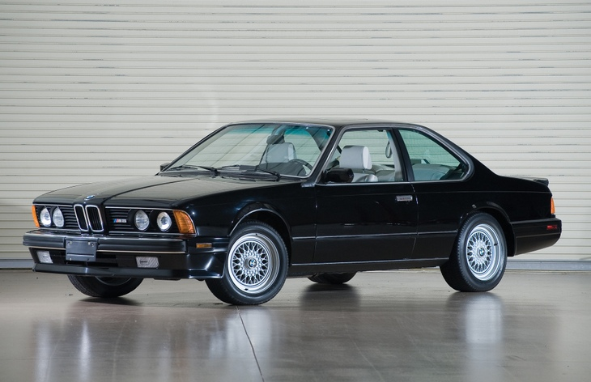
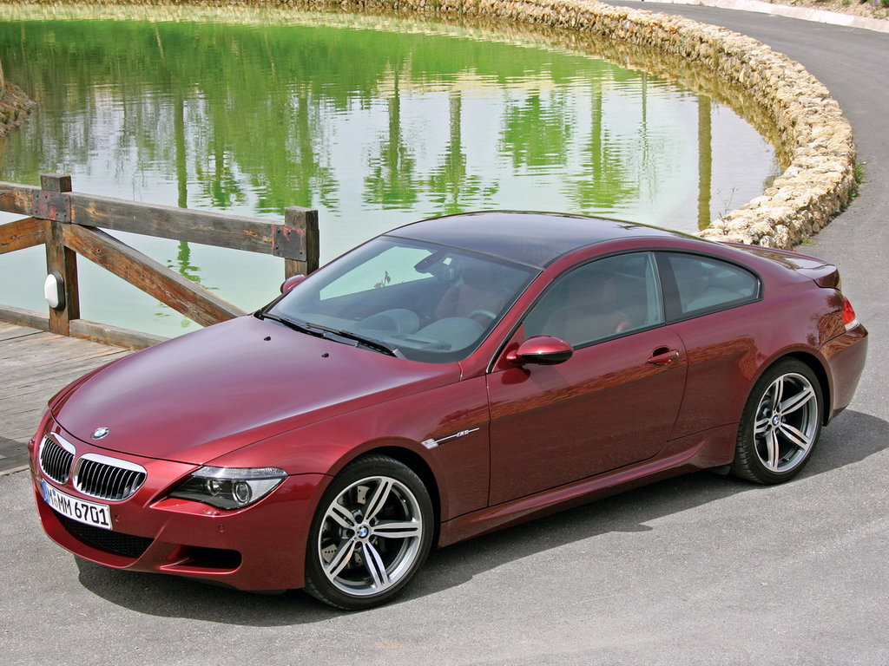

В 1983 году BMW взяли двигатель M88/3 (модифицированная версия двигателя M88/1 от BMW M1) установили его на платформу BMW E24 от 6 серии, создав M635CSi (в Северной Америке просто M6
BMW M6 — высокотехнологичная версия BMW 6-ой серии, разработанная спортивным подразделением немецкого автопроизводителя BMW. Первое поколение было представлено в 1983 году. BMW M6 очень богата электроникой, имеет от 5 до 12 режимов передач.
M6 e24

M6 e63

BMW M6 E63 стал вторым поколение в серии M6 после M6 E24. Эту модель было впервые представлено в 2005 году на Международном автосалоне в Женеве и так же как серийная версия 6 серии E63, версия М6 производилась на заводе в Дингольфинге, что на северо-востоке от Мюнхена.Внешне М6 Е63 купе довольно значительно отличается от серийного купе. На переднем бампере вместо противотуманных фар расположился большой воздухозаборник, боковые зеркала с черной нижней частью специально разработаны для этой серии, задний бампер приобрел более агрессивный дизайн, который включает с себя центральный диффузор, закрылки и двойные насадки на выхлопных трубах.